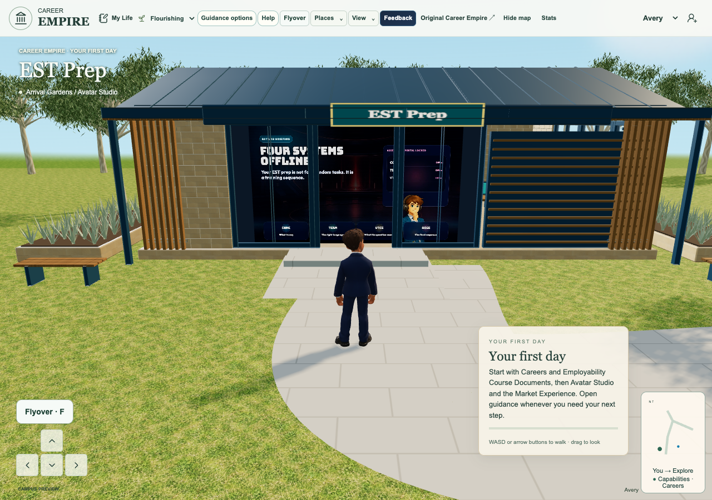
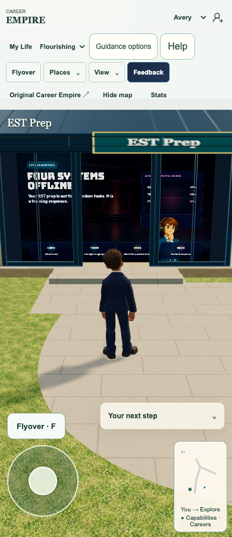
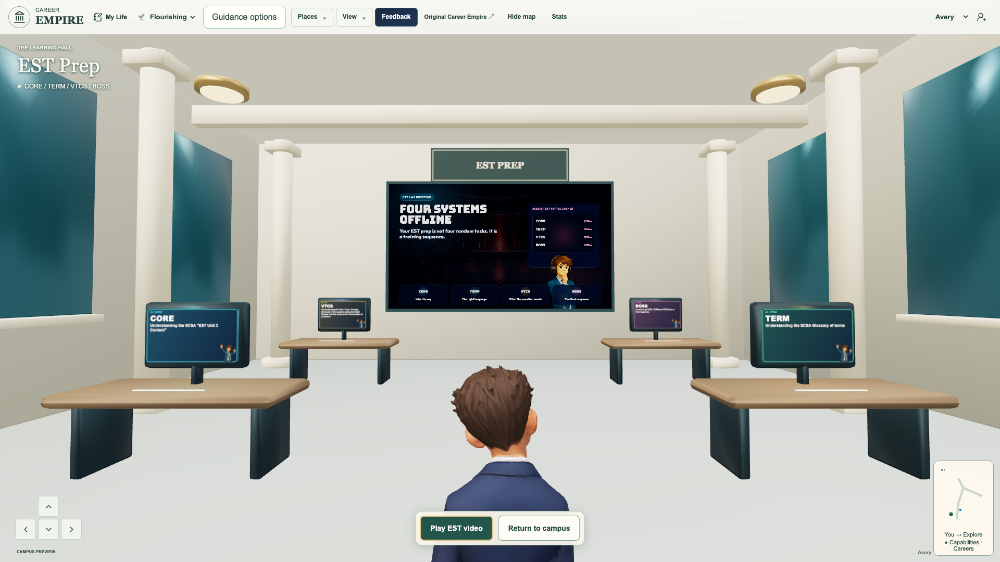
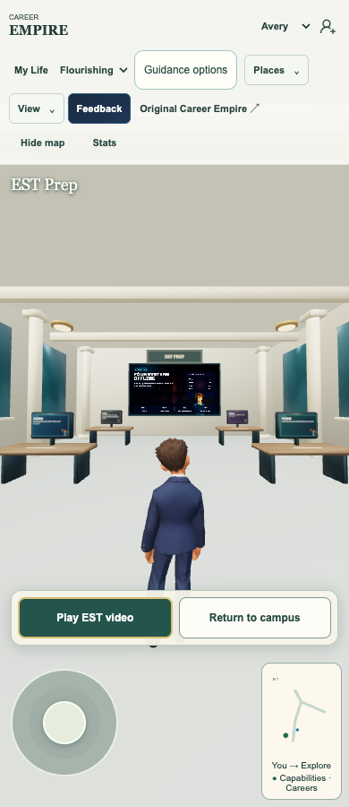
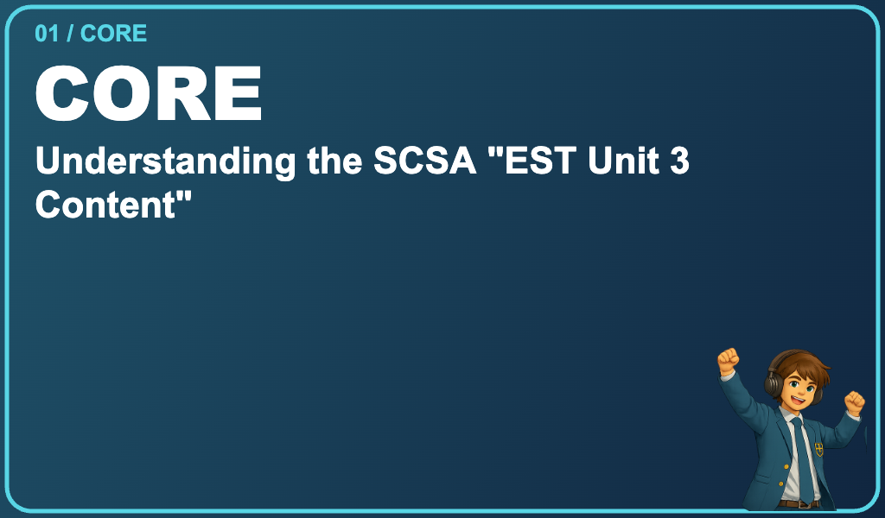
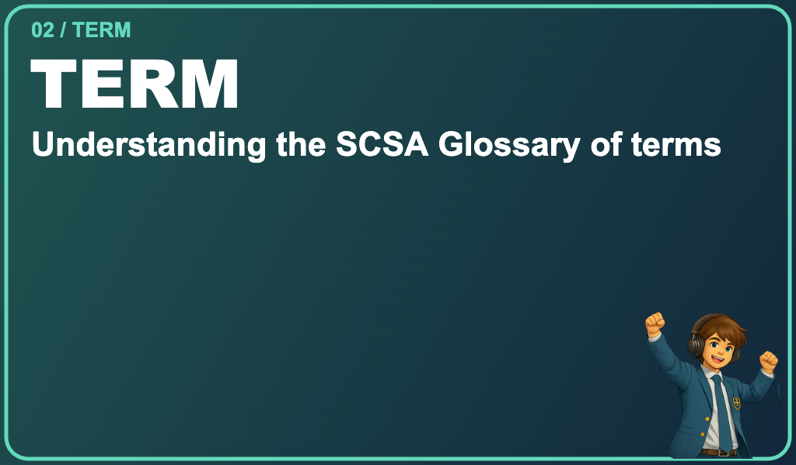
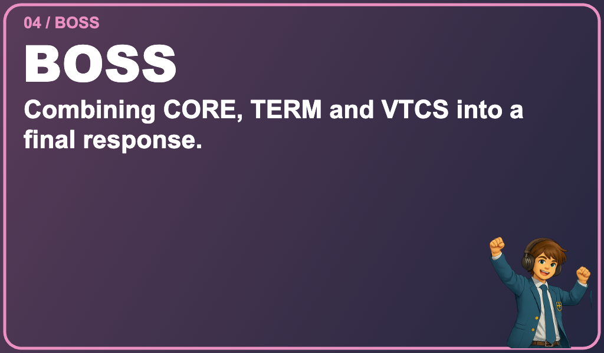

Published and independently verified
Final EST 1a7faf627d5177582cc08fb21d42482d26489a9f is published and independently verified at the actual Career Empire game. Pages43331239471 succeeded; all355 actual runtime asset hashes match. Live native Chrome1280/390/1920 verifies the floor-height outside window video, physical walk-in, Play EST video and Return to campus both immediately visible and actionable without another step, audible cinema/close, mouse/touch wall-screen activation and keyboard/touch return. All four CORE/TERM/VTCS/BOSS card/guide graphics are loaded in the native scene and their actual live CanvasTextures exactly match the inspected qualified graphics. Settled1920 capture shows all four together; phone entry controls remain clear of joystick/map. Zero page errors in all three cases; exact live app bytes verified before appending read-only observers. Source391 tests/83 files,355 staged assets/107 imports and4 focused video regressions pass. Broad CI source/coverage passed; browser26pass/13admin-entry-legacy-wardrobe-old-Chapel-guide failures/1interrupted/233not-run retained, no all-CI-green claim. Native fullscreen is denied in headless; actual Safari/physical device/classroom and Tania acceptance remain separate. Archon, Notes, Chapel and shared learning bank are preserved; CI f156c32 remains separately staged. This completes only Tania's three final EST changes. Portfolio153 follows; optional Enter Chapel is restored separately later while walk-in remains.
Actual live ESTFinal EST: window, entry actions and four monitors
Exact final request and ownership
Tania asks only three final EST changes: the video occupies the floor-to-ceiling window area, Play EST video and Return to campus are both immediately available on entry, and each of the four monitors displays its matching reference card with the celebrating headphone guide at the bottom. No further EST scope is added. The sole Integrate and test Initiative game integrator owns this serial successor on verified56d83fe. Existing portfolio153 is preserved and follows after this release; Enter Chapel is restored as an additional option later while walk-in remains.
Window display
The supplied cropped screenshot showed the old small high video above the brown cabinet. Existing authored front panes measure x13.124–18.877 and y.36–3.12. A5.753×2.76m window-sized backing and a full-height16:9 video face at16,1.74,13.925 replace that small rear projection. The cabinet no longer obscures the lower film. The original video aspect and teaching content are retained without stretching or cropping; narrow side margins fill the window backing. Existing architectural framing remains; no wall, column, cabinet, original model or collision body is deleted. The same native video/VideoTexture/material serves outside and inside; muted approach lifecycle, policy retry and audible cinema remain.
Immediate entry actions
A stable native action group offers Play EST video and Return to campus from the first interior presentation, without further walking or a proximity threshold. The first is primary and the return is secondary. Mouse, keyboard and automated touch use ordinary native buttons, with existing input reset/video/return functions. The group hides outside the hall, during cinema, and behind the module/reflection modes. The existing contextual station actions remain separate. The original Chapel primary-touch binding, doorway, camera and exit code are preserved.
Four matching monitor cards
CORE: Understanding the SCSA "EST Unit 3 Content". TERM: Understanding the SCSA Glossary of terms. VTCS: Understanding the Verb, Topic, Context, Structure of the question using the SCSA Glossary of Key words in the Formulation of questions. BOSS: Combining CORE, TERM and VTCS into a final response. Reference colours and a celebrating guide appear on every corresponding face. Code-native high-resolution CanvasTextures fit the four authored1.04×.61m Terminal glass faces,4mm in front, retaining hardware/desks and removing only the old redundant floating name plaques. Existing guide-character/guide-celebration.png is byte-unchanged SHA25659cd19df4cf0755dea0eb2fbd7941aab13a466c40dd56cf27780a6c555da7222. The canvas source rectangle uses the complete celebrating pose and excludes an adjacent atlas sliver; no source image is edited. One recoverable image load redraws all four faces and invalidates paused-frame presentation. Guide failure retains readable card text and supports retry.
Exact verification
391 unit tests across83 files pass, including four new card-load/retry/geometry/entry-gating regressions. Four focused wall-video lifecycle/ray-gesture checks pass.355 staged runtime hashes and107 reachable imports pass. Actual isolated native-Metal Chrome1280/390 checks pass physical keyboard entry, both visible/actionable entry buttons with no further movement, audible Play and close, all four loaded card/guide faces, real mouse/touch wall-screen cinema and Return via keyboard/touch. A1920×1080 native case passes the same flow and shows all four monitors together after the actual camera settles. All three cases record zero page errors. Each actual CanvasTexture was visually inspected for full text, correct content/colour and the celebrating guide; native exterior and interior captures were compared with the supplied references. Original video/architectural framing and source documents remain distinct from the new monitor graphics.
Retakes and test limits
An initial read-only observer quote error prevented the harness launching; it is retained. A keyboard-return retake focused before the action group became visible after cinema close; the harness now waits for real visibility. A phone failure was initially attributed to compatibility clicks, but event tracing proved entry Play opened correctly: the later wall-screen tap used a stale camera projection during transition. Final tests use the actual screen's current projected centre and wait for the existing camera to settle before appearance captures. No teleport, forced click, gameplay replacement or assertion-threshold reduction was used. Failed logs and captures remain. Native fullscreen still reports not granted in headless Chrome; working audible cinema/fallback is independently verified. Actual Safari, physical touch, classroom and Tania acceptance remain separate; no all-CI-green claim.
Curriculum, privacy and preservation
These are the supplied existing EST orientation descriptions, not a new edition, cohort, curriculum coverage or mastery certification. CORE/TERM/VTCS/BOSS destinations, source PDFs, teaching material, scoring, progression and teacher functions remain unchanged. No new learner data, identity, storage keys, permissions, telemetry, backend, provider or external host. User reference images remain private; only actual game/canvas proof is exported in this bounded review. Archon, Notes, Chapel, shared Initiative library and separate staged CI f156c32 are preserved. Approved, source-qualified, published and accepted remain distinct. Game publication is pending genuine receipt and normal guarded push.
Actual qualified game and monitor graphics

Actual native classroom/window render. Actual live1a7faf6; user acceptance remains separate.
Actual native classroom/window render. Actual live1a7faf6; user acceptance remains separate.
Actual native classroom/window render. Actual live1a7faf6; user acceptance remains separate.
Actual native classroom/window render. Actual live1a7faf6; user acceptance remains separate.
Actual CanvasTexture used on the corresponding monitor. Actual live1a7faf6; user acceptance remains separate.
Actual CanvasTexture used on the corresponding monitor. Actual live1a7faf6; user acceptance remains separate.Actual CanvasTexture used on the corresponding monitor. Actual live1a7faf6; user acceptance remains separate.
Actual CanvasTexture used on the corresponding monitor. Actual live1a7faf6; user acceptance remains separate.playable-3d/app.js 100644:b1cc3b04c3ab0fe4ec949aa28eff7ae3e7f7e580
playable-3d/est-station-cards.mjs 100644:5d5aeb61f33cd83e9e86d085696b0c96c6d9c6a8
playable-3d/est-wall-video.js 100644:c115da74c5e115dc15c789a2492c5a25abba58aa
playable-3d/guest-shell.mjs 100644:d0f97fa215f40eee9841ee982b8533f009fb94e2
playable-3d/index.html 100644:07ad711c033457fe8e9b733f05284a2feb99b8d5
playable-3d/release-manifest.json 100644:fc978878f513184aa83b16c3aaab999389e41ef5
playable-3d/style.css 100644:39b739a60e3767be6d22e22b7abda976c4e01a36
playable-3d/world.js 100644:4352148f503a16e88bd0ee6404d1836cd83b4a9e
tests/unit/est-presentation.test.mjs 100644:c3178fddd65df3a595a697524c24e66b905579f8
Record accuracy
Material-record metadata correction:149 and155 inherited a Chapel rationale/evidence caption from a template. Their current EST purpose, exact evidence links and separate user-acceptance status are corrected here. Source integrations and game receipts remain unchanged.